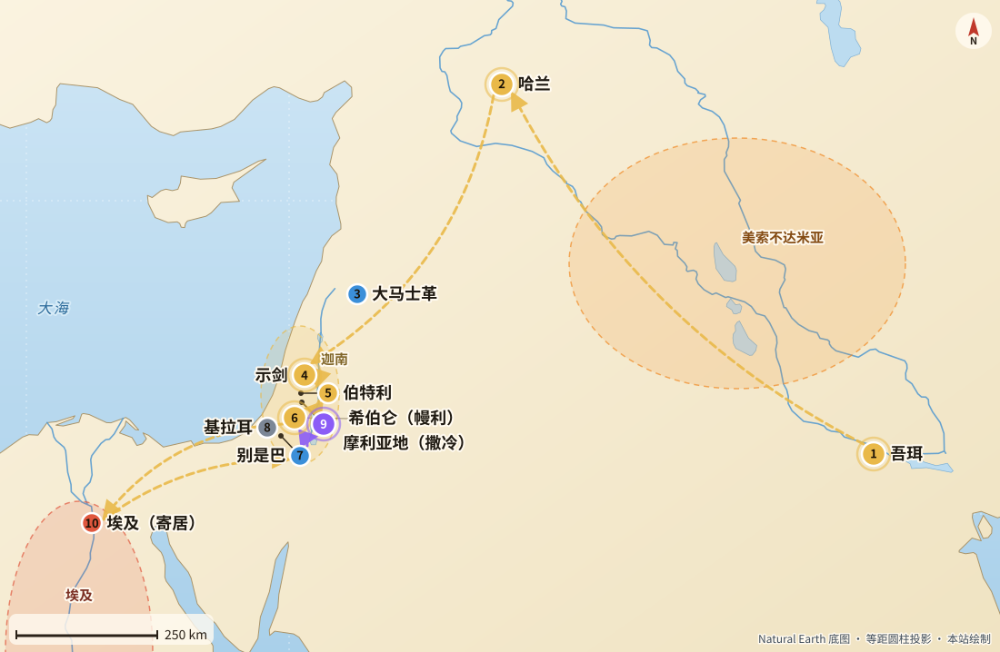
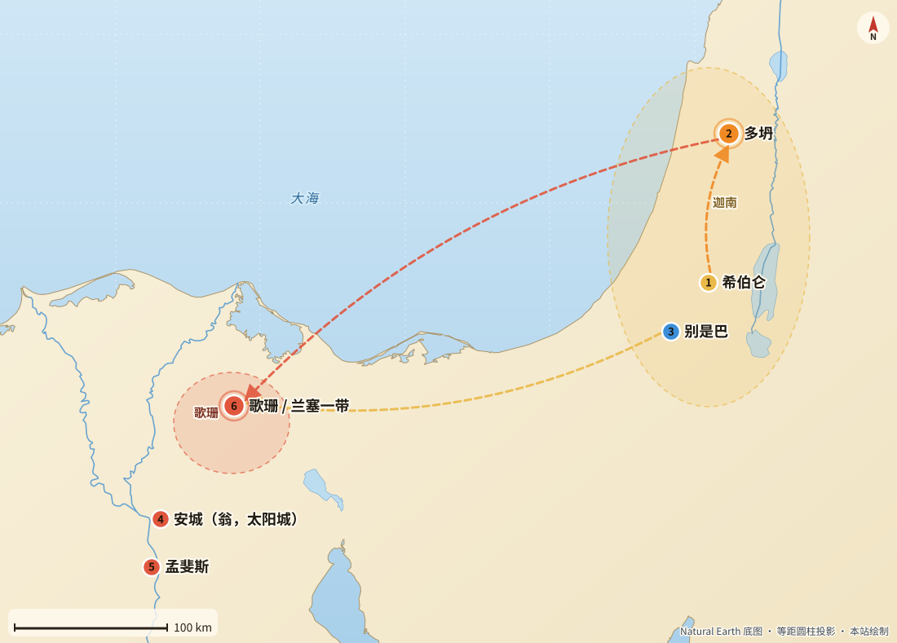

创世记 Genesis · בְּרֵאשִׁית
一句话：神创造万有；人背约堕落；神却应许女人的后裔，并拣选亚伯拉罕一家，使万族因他的后裔得福。前11章是「四大事件」（创造、堕落、洪水、巴别），后39章是「四位人物」（亚伯拉罕、以撒、雅各、约瑟）。
笔记标记图例
- 核心教义 红底 · 红实线
- 钥节金句 金底 · 金实线
- 历史背景 蓝底 · 蓝实线
- 基督 / 圣约 紫底 · 紫实线
- 生活应用 绿底 · 绿实线
- 难点疑义 玫红底 · 虚线
- 波浪线 特别提醒 / 易混点
💎核心一把抓00
⭐钥节与一句话01
起初，神创造天地。— 创1:1（和合本）
我又要叫你和女人彼此为仇；你的后裔和女人的后裔也彼此为仇。女人的后裔要伤你的头；你要伤他的脚跟。— 创3:15（和合本）
我必叫你成为大国。我必赐福给你，叫你的名为大；你也要叫别人得福。为你祝福的，我必赐福与他；那咒诅你的，我必咒诅他。地上的万族都要因你得福。」— 创12:2-3（和合本）
亚伯兰信耶和华，耶和华就以此为他的义。— 创15:6（和合本）
从前你们的意思是要害我，但神的意思原是好的，要保全许多人的性命，成就今日的光景。— 创50:20（和合本）
🏺背景：作者、时间、读者02
- 作者
- 摩西（参约5:46；路24:27；出24:4）。创世记的事件早于摩西，他在圣灵默示下可能使用了家谱、口传与文献资料（如「这是……的后代」标题），但以神的权威写成。
- 写作时间
- 约前1446–1406年，旷野四十年期间（早期出埃及说）。
- 首批读者
- 刚出埃及、在旷野中、要进迦南的以色列人。
- 涵盖年代
- 从创造到约瑟去世（约前1806年）；先祖史约前2091–1806年。
- 地理
- 美索不达米亚（吾珥、哈兰）→ 迦南（示剑、伯特利、希伯仑、别是巴）→ 埃及（歌珊）。
- 吾珥（今伊拉克南部 Tell el-Muqayyar）：伍利（L. Woolley）1922–34 年发掘，有乌尔第三王朝的大塔庙（ziggurat）与王陵。
- 哈兰：与吾珥同为月神（Sin/Nanna）崇拜中心——这使书24:2「你们的列祖……事奉别神」格外清楚。
- 先祖的游牧-半定居生活、以骆驼/驴为驮兽、买卖坟地（创23 麦比拉洞）都符合中青铜时代的处境。
- 约瑟时代的埃及：印章戒指、细麻衣、金链（创41:42）、防腐四十日（创50:3）、「一百一十岁」是埃及人理想寿数（创50:26）。
🎯为什么写：五个写作目的03
🧾大纲：十个「后代/记载」(toledot)04
| 段落 | 经文 | 内容 | 重点 |
|---|---|---|---|
| 序言 | 1:1–2:3 | 六日创造与第七日安息 | 神说就有；人有神的形像 |
| ① 天地的来历 | 2:4–4:26 | 伊甸、背约、该隐与亚伯 | 第一个福音（3:15） |
| ② 亚当的后代 | 5:1–6:8 | 亚当到挪亚的家谱 | 「以诺与神同行」（5:24） |
| ③ 挪亚的后代 | 6:9–9:29 | 洪水、方舟、挪亚之约 | 彩虹的记号（9:13） |
| ④ 挪亚儿子的后代 | 10:1–11:9 | 列国表、巴别塔 | 语言变乱，人类分散 |
| ⑤ 闪的后代 | 11:10–26 | 闪到他拉 | 后裔线索收窄 |
| ⑥ 他拉的后代 | 11:27–25:11 | 亚伯拉罕 | 蒙召、立约、献以撒 |
| ⑦ 以实玛利的后代 | 25:12–18 | 以实玛利十二族长 | 应许并非按肉体 |
| ⑧ 以撒的后代 | 25:19–35:29 | 雅各与以扫 | 拣选的恩典（罗9:10–13） |
| ⑨ 以扫的后代 | 36:1–37:1 | 以东 | 雅各与以扫分开 |
| ⑩ 雅各的后代 | 37:2–50:26 | 约瑟与众兄弟 | 神的护理：「本意是好的」 |
🧵故事线：从伊甸到埃及05
一、创造（1–2）
神用六日创造，第七日安息并赐福。第1章是宇宙全景（「神」Elohim，超越的创造主），第2章聚焦伊甸园与人（「耶和华神」，立约的神）。两章不是矛盾的「两个底本」，而是先总述后特写的古代叙事技巧。
神就照着自己的形像造人，乃是照着他的形像造男造女。— 创1:27（和合本）
耶和华神吩咐他说：「园中各样树上的果子，你可以随意吃，只是分别善恶树上的果子，你不可吃，因为你吃的日子必定死！」— 创2:16-17（和合本）
二、堕落与应许（3–4）
蛇质疑神的话（「神岂是真说……」3:1），夏娃与亚当吃了禁果。神向蛇宣判时首先宣告福音：女人的后裔要伤蛇的头。神亲自用皮子作衣服给他们穿（3:21），暗示要有流血的遮盖。随后该隐杀亚伯，罪迅速蔓延。
三、洪水与巴别（5–11）
「耶和华见人在地上罪恶很大」（6:5），神以洪水审判，却恩待挪亚（6:8），以方舟保存人类与动物；洪水后与挪亚立约，不再用洪水灭世（9:11）。人又在示拿地联合造塔，要「传扬我们的名」（11:4）；神变乱口音。对比：12:2 神说「叫你的名为大」——名声是神所赐，不是人造塔得来。
四、亚伯拉罕（11:27–25:11）
神呼召亚伯兰离开本地、本族、父家（12:1），应许地、后裔、福。他「信耶和华，耶和华就以此为他的义」（15:6）。神在 15 章以「冒烟的炉、烧着的火把」独自从劈开的肉块中经过，以自我咒诅之誓担保应许；17 章赐割礼为约的记号；22 章试验亚伯拉罕献以撒，神预备公羊：「耶和华以勒」。
亚伯拉罕说：「我儿，神必自己预备作燔祭的羊羔。」于是二人同行。— 创22:8（和合本）
五、以撒与雅各（25–36）
双胞胎未出生，神就说「将来大的要服事小的」（25:23）——拣选不按行为（罗9:11）。雅各用诡计夺取长子名分与祝福，逃往哈兰；在伯特利梦见天梯（28:12，参约1:51）；在雅博渡口与神摔跤，改名「以色列」（32:28）。
六、约瑟（37–50）
约瑟被卖到埃及，经历波提乏家、监狱、为法老解梦，成为宰相；饥荒中众兄弟下埃及，最终相认。犹大愿意替便雅悯为奴（44:33），显出悔改的心。雅各临终祝福：「圭必不离犹大」（49:10）。约瑟总结：「从前你们的意思是要害我，但神的意思原是好的」（50:20）。
⏳时间线：先祖年代（早期说，约数）06
🗺️地图与历史：近东世界 · 亚伯拉罕 · 约瑟07
古代近东：创世记的世界舞台

真实地理底图：Natural Earth（公有领域）海岸线、河流、湖泊，本站本地绘制，无第三方地图服务。金线＝亚伯拉罕的旅程；绿线＝出埃及至应许之地（大方向）。古代地点多为学界通行推定，标“推定/有争议”处尚无定论。
- 1吾珥 Ur · 约前2100
迦勒底的吾珥，亚伯兰的故乡（创11:31）；以月神南纳（Nanna/Sin）的塔庙闻名。 - 2巴比伦（示拿） Babylon · 创10–11
示拿地，巴别塔故事的背景；美索不达米亚的阶梯式塔庙（ziggurat）。 - 3尼尼微 Nineveh · 创10:11
宁录国度的城邑之一，后为亚述大城。 - 4努斯 Nuzi · 前15–14世纪
出土数千块泥板，反映收养、长子权、家神等习俗，可与族长故事对照。 - 5马里 Mari · 前18世纪
幼发拉底河畔古城，出土泥板记载“杀驴立约”等立约习俗和先知现象。 - 6哈兰 Haran · 创11:31–12:4
他拉一家暂居之地；后来利百加、拉结的家乡（创24；29）。 - 7亚拉腊（乌拉尔图） Ararat / Urartu · 创8:4
“亚拉腊山”指亚拉腊（乌拉尔图）一带的山地，方舟停靠处（具体山峰不可考）。 - 8哈图沙 Hattusa · 前14–13世纪
赫人帝国首都；出土的宗主条约格式与出埃及记20–24章、申命记结构相似。 - 9乌加列 Ugarit · 前14–13世纪
出土巴力神话泥板，揭示迦南宗教背景（申命记严禁的拜巴力）。 - 10大马士革 Damascus · 创14:15；15:2
亚伯兰追敌直到大马士革北边；管家以利以谢是大马士革人。 - 11示剑 Shechem · 创12:6–7
亚伯兰进迦南后第一座坛；神在此首次应许“我要把这地赐给你的后裔”。 - 12希伯仑 Hebron · 创13:18；23
幔利橡树；麦比拉洞——族长们的坟地，应许之地的“首付”。 - 13孟斐斯 Memphis · 古王国以来
埃及古都；法老被视为神之子，尼罗河被神化。 - 14兰塞（歌珊） Pi-Ramesses / Goshen · 出1:11；12:37
以色列人被迫建造积货城兰塞；出埃及的起点。 - 15西奈山（传统位置） Jebel Musa · 约前1446
颁布律法、立约之山（出19–24）。位置另有阿拉伯说等，此为传统推定。
- 吾珥（Tell el-Muqayyar）由伍利发掘，有乌尔第三王朝大塔庙。
- 哈兰与吾珥同为月神崇拜中心。
- 努斯、马里泥板可与族长习俗对照（收养、立约），是背景而非「底本证明」。
亚伯拉罕的旅程

真实地理底图：Natural Earth（公有领域）海岸线、河流、湖泊，本站本地绘制，无第三方地图服务。金线＝亚伯兰/亚伯拉罕的主要旅程；紫线＝往摩利亚（创22）。古代地点多为学界通行推定，标“推定/有争议”处尚无定论。
- 1吾珥 Ur · 创11:31
迦勒底的吾珥，亚伯兰故乡。 - 2哈兰 Haran · 创11:31–12:4
他拉一家暂居；后为利百加、拉结家乡。 - 3大马士革 Damascus · 创14:15；15:2
追敌至大马士革北；以利以谢是大马士革人。 - 4示剑 Shechem · 创12:6–7
进迦南第一座坛；应许「这地赐给你的后裔」。 - 5伯特利 Bethel · 创12:8
在伯特利与艾中间支搭帐棚、筑坛。 - 6希伯仑（幔利） Hebron · 创13:18；18；23
橡树下蒙访；麦比拉洞为族长坟地。 - 7别是巴 Beersheba · 创21:31–33
立约之井；呼求耶和华永活神的名。 - 8基拉耳 Gerar · 创20
与亚比米勒（位置推定）。 - 9摩利亚地（撒冷） Moriah / Salem · 创22:2；14:18
献以撒；麦基洗德是撒冷王。 - 10埃及（寄居） Egypt · 创12:10–20
因饥荒下埃及，后又上来。
- 路线：吾珥→哈兰→示剑/伯特利→埃及→再回迦南（希伯仑、别是巴）。
- 创14 追敌直到大马士革以北，说明族长并非与世隔绝的牧人。
- 麦比拉洞（创23）是应许之地的「首付」——先买坟，后得地。
约瑟与埃及

真实地理底图：Natural Earth（公有领域）海岸线、河流、湖泊，本站本地绘制，无第三方地图服务。橙线＝约瑟被卖之路；红线＝商队下埃及；金线＝雅各全家后下。古代地点多为学界通行推定，标“推定/有争议”处尚无定论。
- 1希伯仑 Hebron · 创37:14
雅各打发约瑟去看哥哥们。 - 2多坍 Dothan · 创37:17
约瑟被卖给米甸/以实玛利商人。 - 3别是巴 Beersheba · 创46:1
雅各下埃及前在此献祭。 - 4安城（翁，太阳城） On / Heliopolis · 创41:45
约瑟娶安城祭司波提非拉的女儿。 - 5孟斐斯 Memphis · 古王国以来
埃及古都与行政中心（推定相关）。 - 6歌珊 / 兰塞一带 Goshen / Avaris · 创47:6、11
雅各一家被安置在埃及最好的地。
- 多坍是南北商路节点，被卖下埃及合乎地理。
- 印章戒指、细麻衣、金链、防腐四十日、一百一十岁，都符合埃及宫廷与丧礼习俗。
- 歌珊（尼罗三角洲东缘）适合放牧，也靠近出入迦南的路。
🌍古代近东文化：相似之处与根本不同08
| 近东文献/习俗 | 内容 | 创世记的对照 |
|---|---|---|
| 《埃努玛·埃利什》Enuma Elish（巴比伦创世史诗） | 马尔杜克杀死海怪提亚玛特，用其尸体造天地；人是用叛神金古的血造的，为众神做苦工。 | 神无需争战，「说有就有」；海怪（大鱼，1:21）只是受造物；人有神的形像，是受托管理的「王」，不是奴隶。日月不提名字，只称「大光、小光」——不是神祇。 |
| 《阿特拉哈西斯》Atrahasis；《吉尔伽美什》第11块泥板 | 众神因人类「吵闹」而发洪水；乌特纳匹什提姆造船、放鸟探水；众神「像苍蝇一样」聚集吃祭物。 | 相似的历史记忆（大洪水、方舟、放鸟、献祭），但创世记的原因是道德审判（6:5），拯救出于恩典（6:8），神立约保守（9:9–17）。 |
| 汉谟拉比法典 §144–147；努斯（Nuzi）文献 | 无子的妻子可把婢女给丈夫生子，婢女不得与主母同列。 | 撒莱与夏甲（16）、拉结与辟拉（30）符合当时习俗；但圣经描述不等于认可——这正是不信应许的结果。 |
| 长子名分、家神（teraphim） | 长子名分可转让；家神像与继承权有关（努斯文献常被引用，解释仍有争议）。 | 以扫为一碗汤卖长子名分（25）；拉结偷家神（31:19）。 |
| 塔庙（ziggurat） | 美索不达米亚的阶梯形神庙，象征连接天地的「山」。 | 巴别塔「塔顶通天」（11:4）；神「降临要看看」（11:5）——讽刺人的高塔在神眼中何等渺小。 |
| 立约仪式：劈开牲畜 | 近东（如马里 Mari 文献）有「杀驴立约」，立约者经过肉块，表示若违约当如此。 | 创15 只有神（火把与炉）经过——神单方面担保，预表神自己担当违约的咒诅（参来6:13–18）。 |
✝️圣经神学：创世记如何指向基督09
🤝圣约神学：工作之约 · 挪亚之约 · 亚伯拉罕之约10
| 圣约 | 经文 | 双方与条件 | 记号 | 改革宗要点 |
|---|---|---|---|---|
| 工作之约（生命之约） | 创2:16–17；何6:7；罗5:12–21 | 神与亚当（代表全人类）；以完全顺服为条件，应许生命 | 生命树 | 亚当是盟约代表（federal head）；比利时信条14：人「干犯了从神领受的生命的律」 |
| 恩典之约的启示 | 创3:15 | 神向堕落的人主动施恩 | （皮衣：流血的遮盖） | 海德堡19：福音是神「首先在伊甸园里亲自启示」 |
| 挪亚之约 | 创8:20–9:17 | 神与挪亚、后裔、一切活物 | 彩虹 | 保存世界直到救赎完成；许多改革宗神学家称之为「普遍恩典之约」，亦有视为恩典之约的施行（侧重点不同） |
| 亚伯拉罕之约 | 创12:1–3；15；17 | 神与亚伯拉罕「和你的后裔」 | 割礼 | 恩典之约的核心施行；「作你和你后裔的神」（17:7）——儿女包括在约中（婴儿洗礼的根据，海德堡74） |
我要与你并你世世代代的后裔坚立我的约，作永远的约，是要作你和你后裔的神。— 创17:7（和合本）
📜信条对照（CCI 原文逐字）11
以下引文逐字取自 ccifellowship.org《敬拜手册》，并附原页链接。
我们相信，圣父在合宜的时间，藉着道，即他的独生子，从无有中创造了天地万物1；他给了每一个受造物本质、外形和结构，也给了他们具体的任务和职能，以服侍创造主。他还继续以他永恒的护理与无限的能力支持并管理着万物，为要让人得益处，以使人能服侍神。
他也将天使造得甚好，可作他的使者，也可为他的选民效力2。有些天使从被造时所置的高位上堕落到了永远的灭亡中3；其余的天使则因神的恩典而坚定不变，继续居于本位。魔鬼及邪灵极度败坏，成为神与众善的仇敌4。他们竭尽全力，像杀人犯一样伺机而动，企图败坏教会和其中的信徒，并用各种诡计毁坏一切5。因其自身的邪恶，他们被定了罪，当受永远的刑罚，天天等候那可怕的苦刑6。
所以,我们恨恶并弃绝撒督该人的错谬——他们否认诸灵与天使的存在7；我们也弃绝摩尼教派的错谬——他们说魔鬼不是被造的，而是自有的，并认为邪恶是魔鬼的本性，而非出于败坏。
我们相信神用地上的尘土造人1，且是照他自己的形像和样式造的，使人有良善、公义和圣洁2。那时，人在凡事上都能合乎神的旨意。然而，人有了这尊贵的地位却既不看重也不感恩，反而听从魔鬼的话，甘受罪的辖制，以至于死和受咒诅3。人干犯了从神领受的生命的律；因着罪，他背离了神，即生命的主，也全面败坏了自己的本性。因着这一切，他的身体和灵魂都当受死4。
我们须根据神的话语来辨别神的旨意。神宣告说，信徒的儿女是圣洁的，不是因为他们的本性圣洁，而是因为他们与父母共同承受恩典之约1。因此，敬虔的父母不该怀疑在婴幼期被神召回而离世的儿女已蒙了拣选、得了救恩2。
🧩难点解析12
🧩 创造的「日」是什么意思？
改革宗内部对「日」的解释（字面24小时、日-时代、框架说、类比日等）有不同看法；威斯敏斯特信条4.1 说神「在六日之内」创造（in the space of six days，要旨）。北美多个欧陆改革宗宗派（如 URCNA、CanRC）在大会中强调：亚当是历史上真实的第一人，是全人类的始祖与盟约代表（罗5:12–19；徒17:26），否认这点会动摇原罪与基督为末后亚当的教义（参比利时信条14–15）。
🧩 「神的儿子们」（6:2）是谁？
主要三说：① 塞特的敬虔后裔与该隐不敬虔后裔通婚（加尔文等多数改革宗解经家）；② 堕落天使（部分早期教父，参犹6、彼后2:4 的不同理解）；③ 古代君王。重点不在于猜测，而在于：罪已经污染到「敬虔线」，审判不可避免。
🧩 「耶和华就后悔」（6:6）？神会改变心意吗？
这是以人的语言描述神对罪的真实忧伤（拟人化）。民23:19「神非人，必不致说谎，也非人子，必不致后悔」。比利时信条第1条承认神是「不改变」的。神的旨意不变，但祂对人的态度随人的悔改或刚硬而以不同方式显明（参耶18:7–10）。
🧩 先祖说谎、多妻、欺骗——圣经认可吗？
叙事描述不等于道德认可。圣经诚实记录先祖的罪（12:13；20:2；26:7；27），并显明其恶果（家庭分裂、仇恨）。这反而凸显：应许的成全靠神，不靠先祖的美德（多特信经第一项：拣选不是因预见的善行）。
🧩 洪水是全球性的吗？
无论对地理范围持何种看法，经文明确：这是神对「凡有血气」之人的普遍审判（6:13），彼后3:6 以此为末日审判的预表。改革宗正统坚持其历史真实性，而非神话。
🧩 雅各与以扫：神不公平吗？
罗9:10–16 引用创25:23，说明拣选「不在乎行为，乃在乎召人的主」。多特信经第一项第7条说「拣选是神不变的旨意」，选民「得救完全是靠着神的恩典」；第15条讲弃绝。人人都配受审判，神怜悯谁是祂的主权。
拣选是神不变的旨意。在创立世界以先1，神就根据他的主权和美意，在基督里，从全人类，即因人自己的过错而堕落犯罪，失去原初的完全，从而招致灭亡的人中，拣选了特定数量的特定的人，使他们得救。这些人得救完全是靠着神的恩典，因他们既不比其他人好，也不更配得神的恩典；他们与不蒙拣选的人一样活在愁苦之中。神也在永恒中指派基督作所有选民的中保与元首，并得救的根基。因此，他定意将他所要拯救的人交与基督，并以他的话语，藉着圣灵，有效地呼召、引领他们进入与基督的相交中；神也定意赐他们在基督里的真信心，使他们称义并成圣；在以大能保守他们连于基督之后2，神最终要使他们得荣耀，以彰显他的慈爱，也因自己荣耀、丰富的恩典而得着称颂3。正如经上所记：“就如神从创立世界以前，在基督里拣选了我们，使我们在他面前成为圣洁，无有瑕疵；又因爱我们，就按着自己意旨所喜悦的，预定我们藉着耶稣基督得儿子的名分，使他荣耀的恩典得着称赞。这恩典是他在爱子里所赐给我们的。”（弗1:4-6）经上又说：“预先所定下的人又召他们来；所召来的人又称他们为义；所称为义的人又叫他们得荣耀。”（罗8:30）4
🔍多角度阅读13
| 角度 | 看见什么 |
|---|---|
| 文学 | 对称结构（洪水叙事以「神记念挪亚」8:1 为中心的交错结构）；重复的「后代」标题；兄弟冲突母题（该隐/亚伯、以实玛利/以撒、以扫/雅各、约瑟/众兄弟）。 |
| 历史 | 先祖人名、迁徙、习俗与中青铜时代相符；吾珥、哈兰、示剑、伯特利、希伯仑都是真实地点。 |
| 神学 | 神是创造主、审判主、立约的神、护理的神。 |
| 救赎历史 | 后裔线从全人类收窄到一家一族，为基督降生预备。 |
| 教会 | 家庭在圣约中（17:7）；礼拜与献祭（4:4；8:20；12:7）；安息日的创造根据（2:2–3；出20:11）。 |
| 伦理 | 婚姻一夫一妻的创造秩序（2:24；太19:4–6）；劳动是神赐的（2:15）；生命神圣（9:6）。 |
🌱应用14
🧠记忆卡与测验15
❓ 创世记1章中，「大光、小光」不直接称为太阳、月亮，最可能的用意是？
❓ 创15章谁从劈开的肉块中经过？
❓ 海德堡要理问答第19问说福音最先在哪里启示？
❓ 雅各下埃及时几岁？
❓ 「罪从一人入了世界」与创世记哪章最相关？
🎬动画导览（点击后播放）16
点击封面后才加载播放器，不自动播放。视频为圣经工程（BibleProject）官方普通话概述，作结构导览；本站神学立场以欧陆改革宗三项联合信条为准。